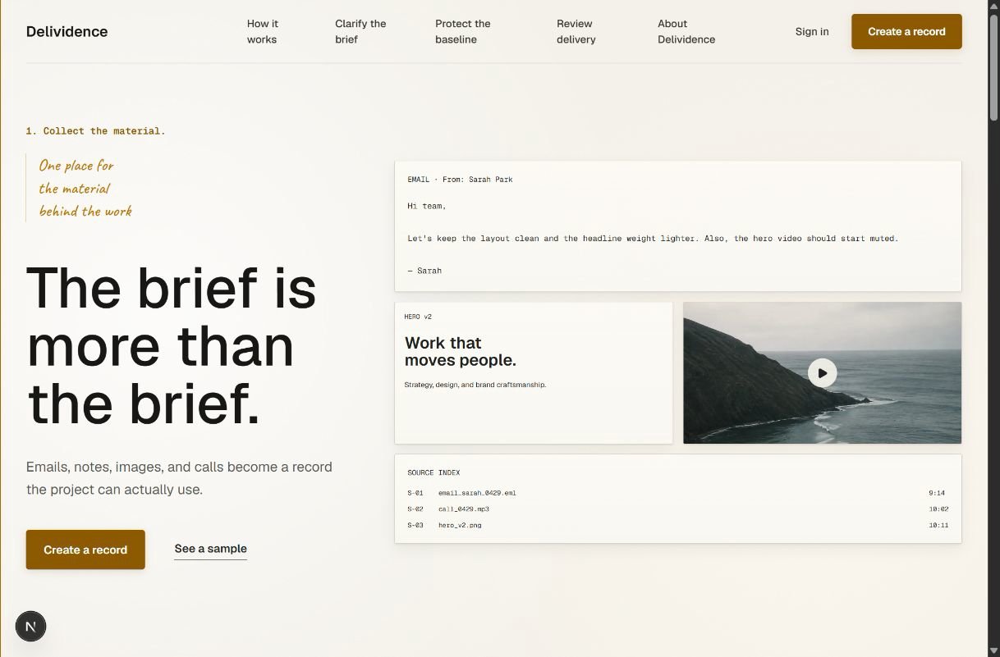
Start
The actual local app landing page, not a mock.
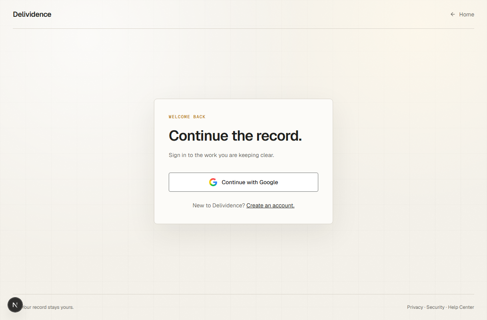
Authentication
The real /sign-in route uses the official Google button.
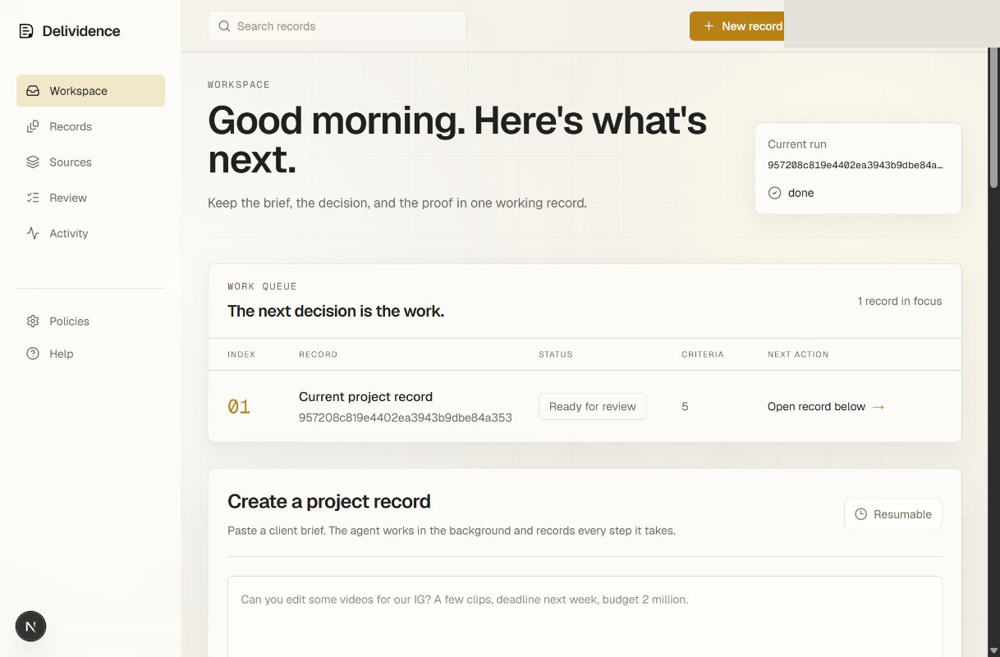
Owner Workspace
A record is created and resumed from the sidebar workflow.
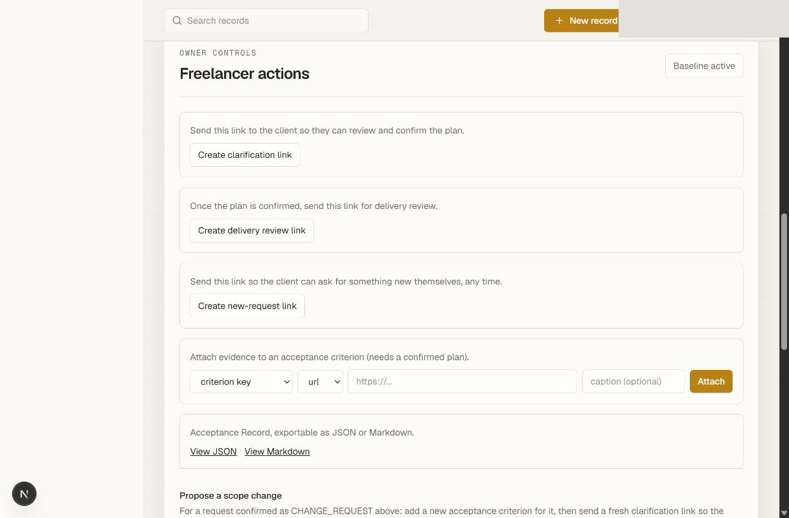
Gemini Extraction
Gemini fills the ledger and the activity trail records it.
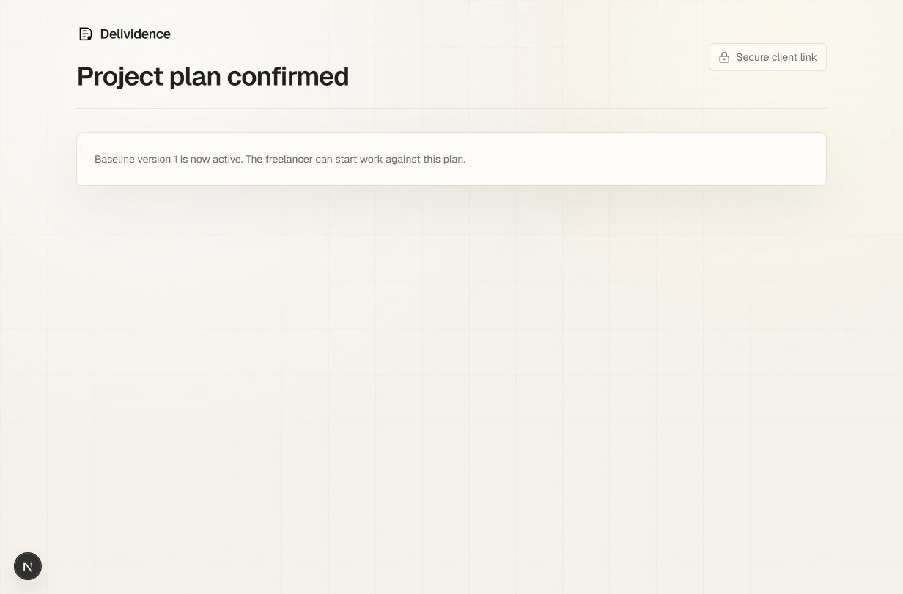
Client Portal
The client confirms baseline version one without an account.
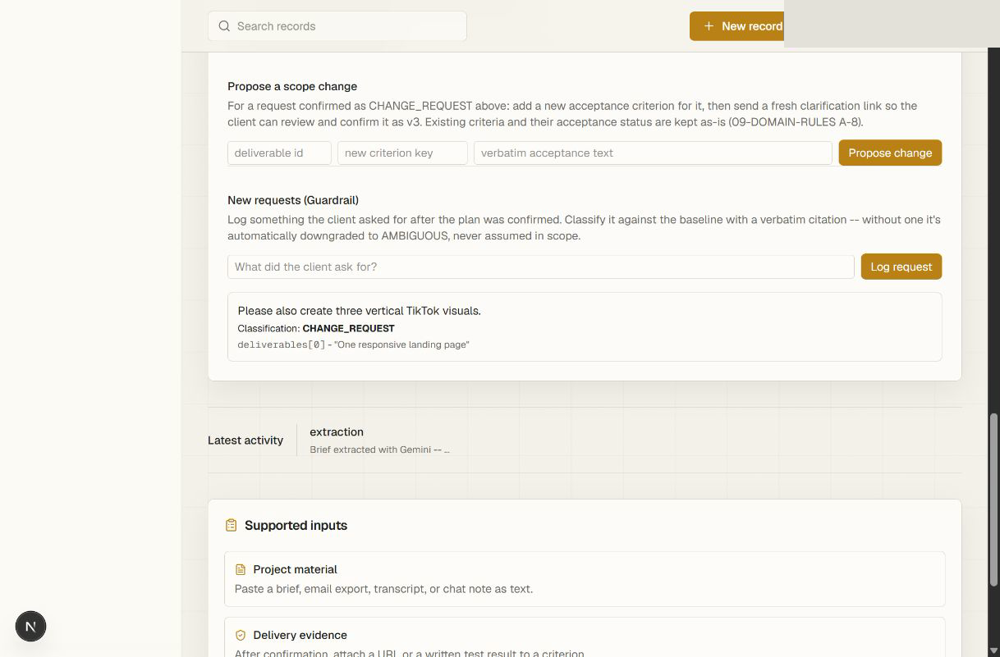
AI Guardrail
A TikTok request is classified as a change request with a citation.
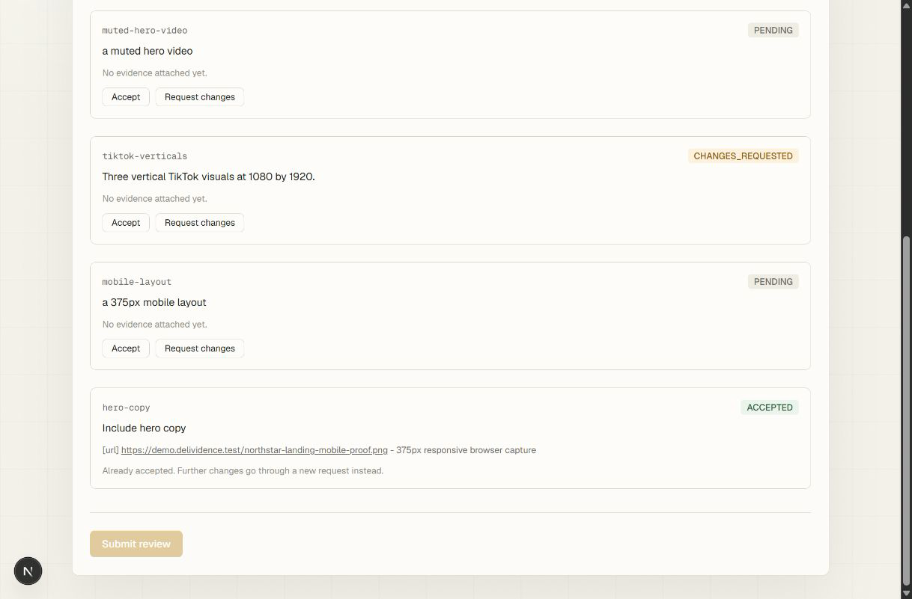
Delivery Review
The client accepts one item and requests changes on another.
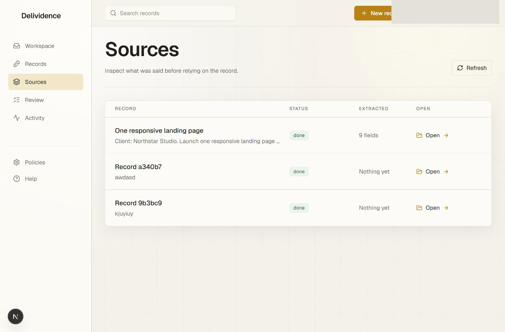
Sources
Source material stays inspectable from the sidebar.
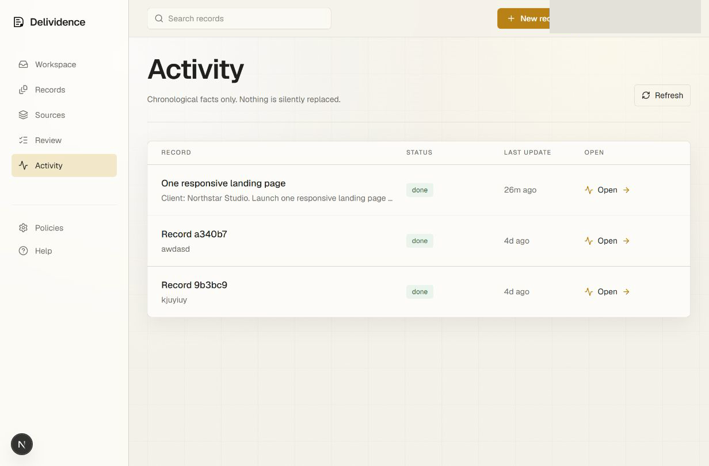
Activity
Every handoff and model action is audit-ready.
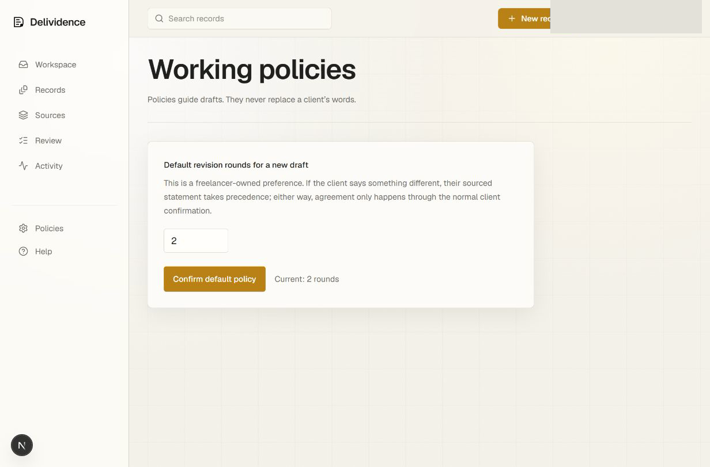
Policies
Default review rules are configurable in the app.
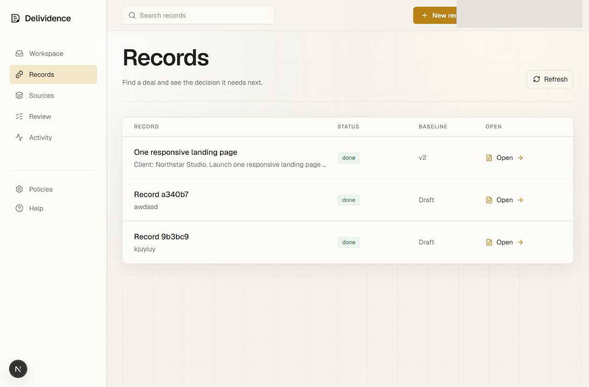
Records
The record list gives judges the reproducible project history.
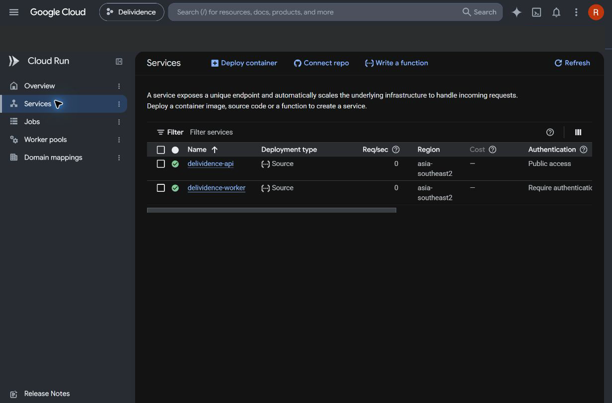
Google Cloud
Cloud Run shows the public API and private worker services.
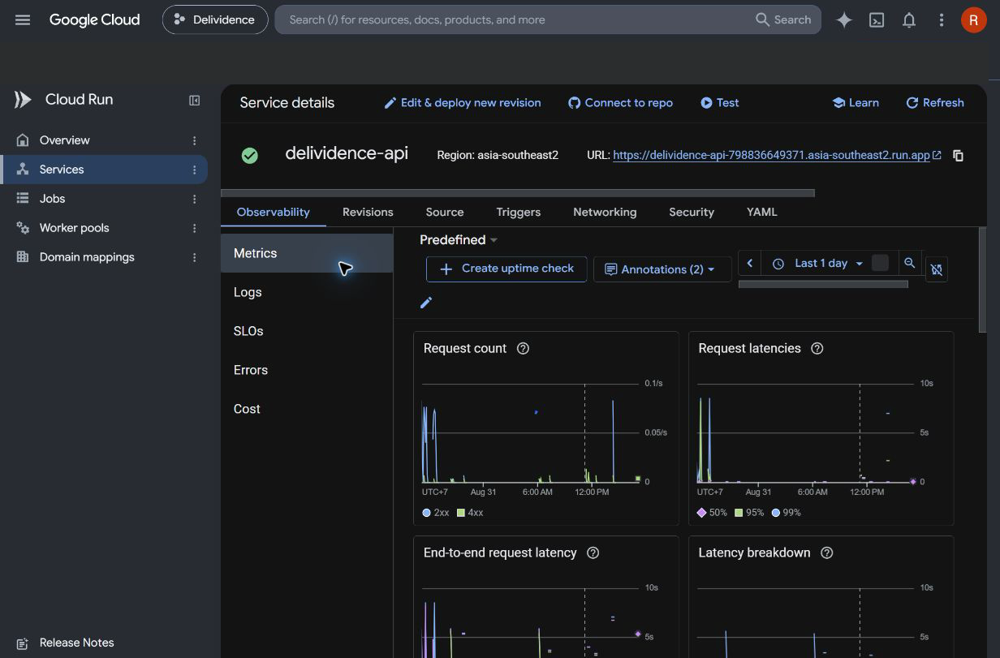
Production Proof
The API service detail page shows the live Cloud Run URL and metrics.